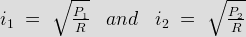
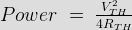
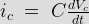
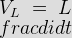
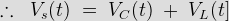
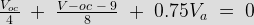
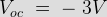
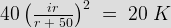
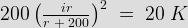
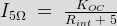

- What would be the potential at node a ?
By superposition,

- If we double the voltage source in above question the Va would be as compared to previous one
V a will get doubled
By superposition,

- In the following circuit the value of VTH & RTHare
\; +\; 2 = 4\;\Omega")
- Which of the following theorem can be applied to any network, which is linear (or) non linear active (or) passive, time variant (or) time in variant ?
Tellegen’s theorem, is one of the most general theorem in network analysis. Tellegen’s theorem state that "In any linear, non linear, passive, active, time variant or time invariant network the summation of power is zero".
- If a resistance of 10 ohm is placed in parallel with the source, the source current I will
Under construction.
- What is the power dissipated in the R due to current source ?
Current in R due to current source
= 3 [ 1 / ( 1 + 2 ) ] = 1 A
The power dissipated due to current source
= 1 2 . 2 = 2 W. - A certain network consists of a large number of ideal linear resistors, one of which is R & two constant ideal source. The power consumed by R is P1 when only the first source is active, & P2 when only the second source is active. If both source are active simultaneously the power consumed by R is

Using superposition,
i = i1 + i2
So power consumed by R = i2R. - The maximum power that can be distributed in the load in the circuit shown is
We will first find Thevenin equivalent across R L.
RTH = 13116 + 1 = 5.1 (for maximum transfer)
VTH = [ ( 9 × 6) / (3 + 6 + 10)] = 54 / 19
. - Find Vx from the given circuit -
Vx = 10 × [50 || 10]
= 83.3 V. - If Vc (t) = 4cos(105t) V in the circuit, find VS :


. - In the following circuit the value of RTH at terminal ab is
Open circuit voltage VOC = Vab = – Va


If terminal ab is short circuited, Va = 0.
Then iSC = 9/8 A
& RTH = VOC / PSC. - A practical DC current source provide 20 KW to a 50 Ω load & 20 KW to a 200 Ω load. The maximum power, that can drawn from it, is
The circuit is as shown below.


r = 100 Ω and i = 30 A
Pmax = [ 302 × 100 / 4] = 22.5 KW. - Consider the given network. What would be the VTH for RL ?
R_b") .
. - In above question, what will be RTH for RL ?
Put a voltage source across AB, find i through the voltage source, we find that i = 0, So RTH = V/i = infinity.
- In following figure, a resistance r is shown to be connected across an active network. It is given that when r = ∞, V = 5 V & r = 0, current output of active source is 2.5 A. What would be the current through r when the value of r is 5 ohm ?
Here r = ∞ being denoted open circuit across the output terminals of the active network, r = 0 indicates the short circuit of the active source.
Thus internal resistance of given source = Rint = VOC / ISC = 5 / 2.5 = 2Ω
By Thevenin’s equivalent circuit, the current through 5 Ω resistor is
. - Ideal current source & voltage source have
Ideal voltage source is defined as the energy source which gives constant voltage across its terminals irrespective of the current drawn through its terminals. But practically, every voltage source has small internal resistance.
Ideal current source is the source which gives constant current at its terminals irrespective of the voltage appearing across its terminals. But practically, every current source has high internal resistance. - Thevenin's equivalent of a network is shown in the given figure. For maximum power transfer to the variable & purely resistive load RL its resistance should be
In case of maximum power transfer theorem, load resistance RL have an equal value to the magnitude of impedance of rest of the network.
- In the circuit shown in figure, X is an element which always absorbs power during a particular operation it sets up a current 1 amp in the direction shown and absorb a power PX. It is possible that X can absorb the same power Px for another current I. The value of current is
i = 1 = 6 / (RX + 1)
⇒ RX = 5 Ω
Now power, P = I2R = 5 W
For 5 A current, P = 52 × 5 = 125 W
For 3 + √14, P = 227 W
For 3 – √14, P = 2.75 W
Hence none of the above is correct. - The current through the 2 KΩ resistance in the circuit shown is
The given circuit is a balanced Wheatstone bridge
VCD = 0 (VC = VD)
iCD = 0 - A coil having a resistance of 5 Ω & inductance of 0.1 H is connected in series with a condenser of capacitance 50μF. A constant alternating voltage of 200 V is applied to the circuit. The voltage across coil at resonance is
At resonance voltage across coil = Q × V source.
Design with  by SARU TECH
by SARU TECH
www.sarutech.com
Content Credited to electrical4u.com
Online Electrical Engineering Study Site